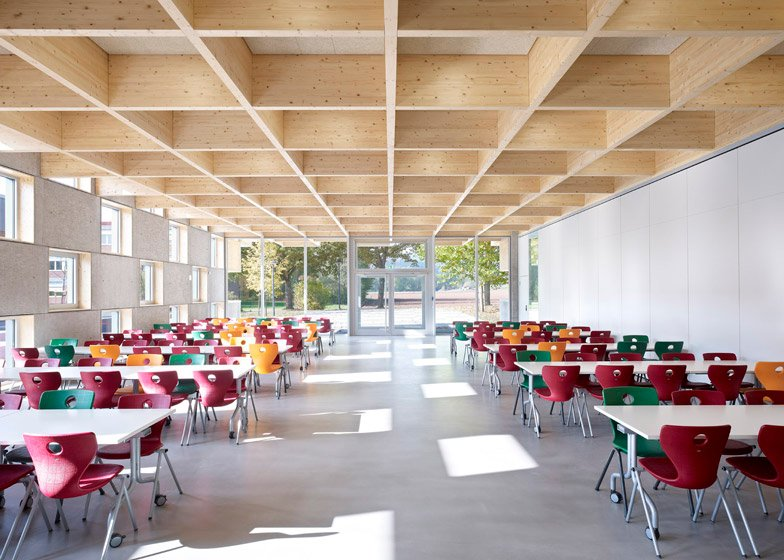

campus life
Rebuilt in 2010, after 20 years.
Every school has a fully equipped school canteen, which the school has outsourced to others yet keeps a strict check on the variety and quality of food served. The menu includes full traditional lunches and healthy snacks as well as soft drinks but no aerated drink—all this at very reasonable prices.

Ran by a trained nurse in first aid
Centre Point Schools are equipped with a fully stacked Sick Room each. These have all necessary medicines administered by a trained nurse so that at least First Aid is administered in case of injury or sudden sickness. Parents are also informed in case the child continues to be uncomfortable.
Service started 21 years ago!
Most of the Centre Point Schools have buses running to and from schools to all parts of the city. Bus services are optional so those who wish to use other means to commute to school such as private vehicles, autos, vans etc. may do so.
Achievements
Jennifer Varghese bags the bronze in the National Table Tennis Tournament!
Jennifer Varghese, won the gold medal in the National Ranking Table Tennis Championship (29th Oct to 3rd Nov), Maharashtra State Table Tennis Championship ( 3rd to 6th Nov), Sub Junior National Table Tennis Tournament (16th to 22nd Nov). Jennifer’s skill and determination continue to lead her up the ladder of success.
Raunak Sadhwani played an exemplary game and won first prize
In the Fide Grand Swiss Chess Tournament (10th to 21st Oct) in Douglas, United Kingdom, Raunak played an exemplary game and bagged the Grand Master Award. He is the 9th youngest Grandmaster in the World. For his stupendous success at such a young age Raunak hopes to improve himself every coming day.
BEST QUIZZERS AT CSIR-NEERI!
Falgun Sukhija and Ishwar Sarda, two brilliant Quizzers of Centre Point School, Katol Road participated in the Science Quiz organized by CSIR-NEERI and were adjudged as the Best Quizzers bagging the 1st and the 2nd position. The two quizzers were rewarded with a great opportunity to participate in the India International Science Festival. The event was held at Biswas Bangla Convention Centre and Science City, Kolkata (5th-8th Nov)
What's New
-
New School Canteen! It was decided by all of the staff that the canteens must be better organised and more efficient that they have been in the past. Online menus with photos of the meals prepared and detailed descriptions of their ingredients help both students and parents make the right nutritional choices. Each student or staff who accesses the canteen could be provided with a School Canteen Account on the school website that can keep track of their previous meal choices . Ordering and paying for meals online can be a lot less complicated for the staff and students alike.
-
Board Exams Cancelled! 
As per the latest official updates, CBSE 10th board exam 2021 has been officially cancelled. For final results, each school will have a group of teachers consisting of several teachers. For the main 80 marks, students will be assessed by these teachers based on their performances in various tests conducted by the school throughout the year. Class 10th board exams students who are not satisfied with the marks given to them will get the chance to appear in an examination when then corona virus outbreak has been controlled.
Our Alumni
.jpg)
Ashutosh Ruia
Ashutosh Ruia
Ashutosh Ruia recieved the award of the Best Economy Hotel at the West India Travel Awards, on behalf of kis property! He is also the Assistant Sales Manager at the Oberoi Hotels.
To Know More
.jpg)
Ganesh Kohli
Ganesh Kohli
Ganesh Kohli is a teacher and counselor who has founded, nurtured and led multiple education-focused organizations over the past 20 years. His journey has led him to visit over 450 colleges and universities and workshops at 300+ high schools.
To Know More
.jpg)
Mukta Chatterjee
Mukta Chatterjee
Mukta Chatterjee is the Executive Director of the Centre Point Group of Schools, Nagpur, India. She used to be the principal of CPS Wardhaman Nagar and a subject teacher in our school, CPS Katol Road.
To Know More
.jpg)
Barka Chellani
Barka Chellani
Barkha Chellani is a Commercial Pilot in Indigo Airlines. She is quite famous within our school and is frequently invited to give speeches in important functions. She is one of our most famous alumnis and when she was a child, we supported her all the way even for her luminescent dream which soon came true!
To Know More
Contact Us